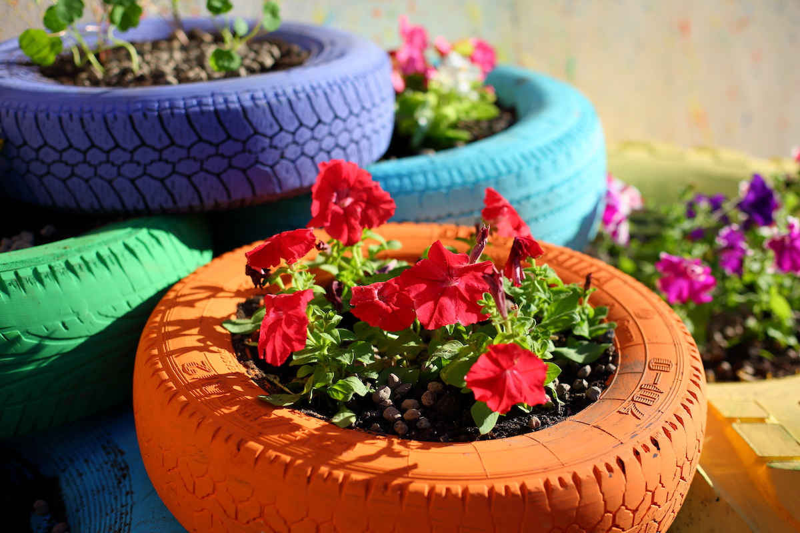
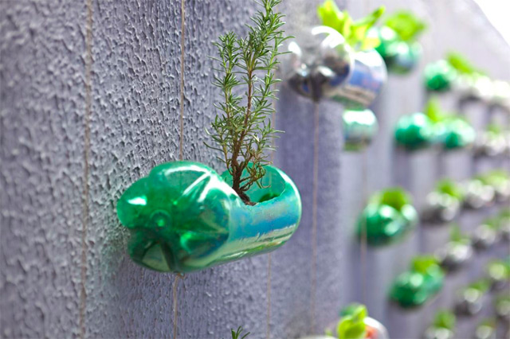
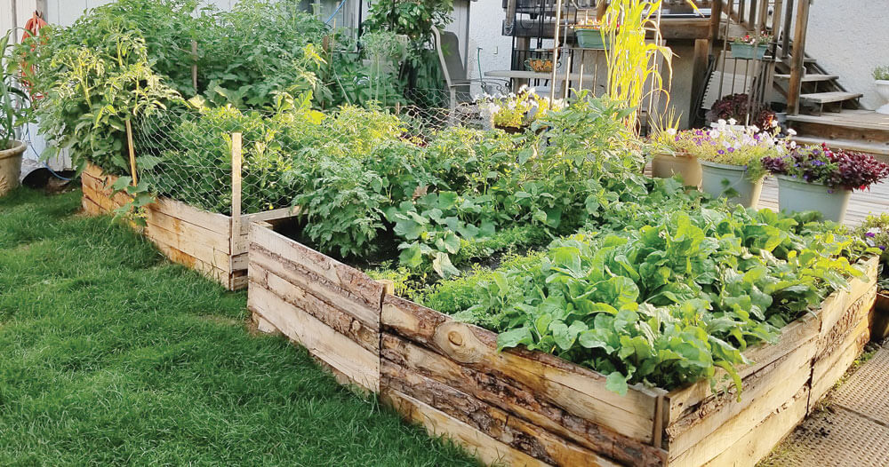
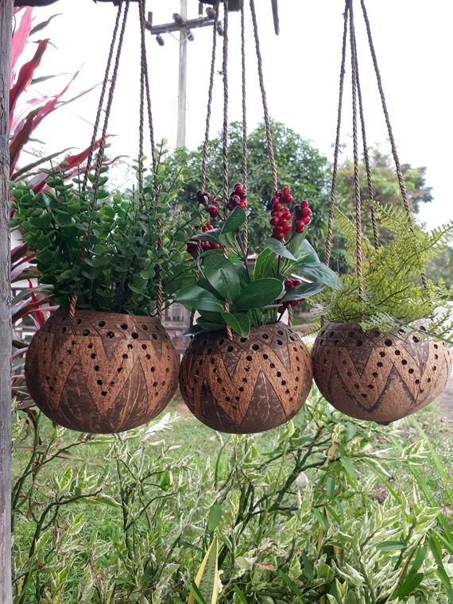

Greening Ideas
Practical tutorials and actionable steps to bring nature into your space, no matter how small.
Balcony Gardens
Transform your small apartment balcony or condo terrace into a lush, thriving garden. Dealing with tropical heat and monsoon rains requires resilient plants. Growing local favorites like Calamansi, Pechay, or vibrant Bougainvillea is the perfect way to bring the "probinsya" feel to the metro.
Where to Buy Equipment & Plants
- Local Hubs: Quezon City Memorial Circle plant stalls, Cartimar Market, or Farmers Garden in Cubao.
- Online: Shopee and Lazada for affordable pots, loam soil, and seeds.
- Hardware Stores: Ace Hardware or True Value for trellises, watering cans, and gardening gloves.
Examples
A vertical garden using recycled plastic bottles for growing Kangkong and Pechay, or a sun-drenched corner filled with terracotta pots of Sampaguita and Aloe Vera.
Instructions
- Step 1: Assess your balcony's sunlight (morning sun vs. intense afternoon heat).
- Step 2: Choose heavy pots that won't blow over during typhoons (Habagat season), ensuring excellent drainage holes.
- Step 3: Use quality loam soil mixed with coco peat to retain moisture during the dry summer.
- Step 4: Plant seedlings properly spaced, avoiding overcrowding to prevent pests.
- Step 5: Water early in the morning or late afternoon to avoid quick evaporation.
Street Greening (Bayanihan Initiative)
Help cool down your barangay and improve air quality by planting trees and shrubs along sidewalks, waiting sheds, and community medians. Let's revive the spirit of "Bayanihan" to create greener streets.
Where to Buy Equipment & Plants
- DENR Nurseries: The Department of Environment and Natural Resources often provides free seedlings for community projects.
- Provincial Nurseries: Ideal for buying native trees like Narra, Banaba, or Caballero in bulk.
- Barangay Hall: Partner with your local LGU to borrow shovels, wheelbarrows, and secure extra soil.
Examples
Planting Yellow Bell or Santan bushes along barangay fences, or a neighborhood initiative to plant shade trees like Mahogany along subdivision main roads.
Instructions
- Step 1: Secure a permit or coordinate directly with your Barangay Captain and local Homeowners Association (HOA).
- Step 2: Ensure planting locations do not interfere with Meralco overhead lines or underground water pipes (Maynilad/Manila Water).
- Step 3: Select native, resilient tree species that can survive both extreme heat and heavy flooding.
- Step 4: Dig a hole twice the width of the root ball.
- Step 5: Plant, add organic compost, and assign neighbors a rotation schedule for watering.
Eco-Inspiration
Looking for creative ways to be more sustainable? Check out these 4 upcycling ideas.

Tire Planters
Paint old car or jeepney tires in bright colors and stack them to create deep planters for root vegetables or large shrubs.

Plastic Bottle Vertical Wall
Cut recycled 1.5L soda bottles in half and string them along a wire mesh to create a space-saving vertical herb wall.

Pallet Raised Beds
Repurpose discarded wooden shipping pallets from markets into raised garden beds, perfect for keeping plants safe during floods.

Coconut Shell Hanging Pots
Don't throw away buko shells! Drill holes for drainage and use them as natural, biodegradable hanging pots for orchids and ferns.